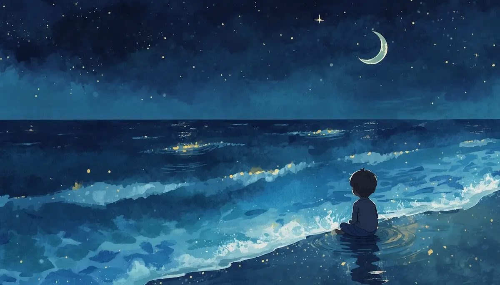
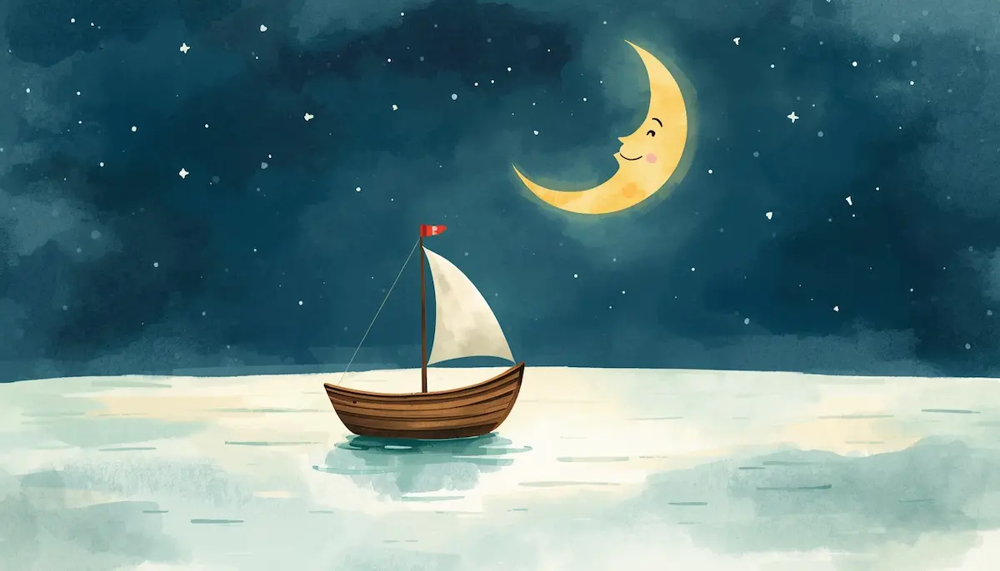
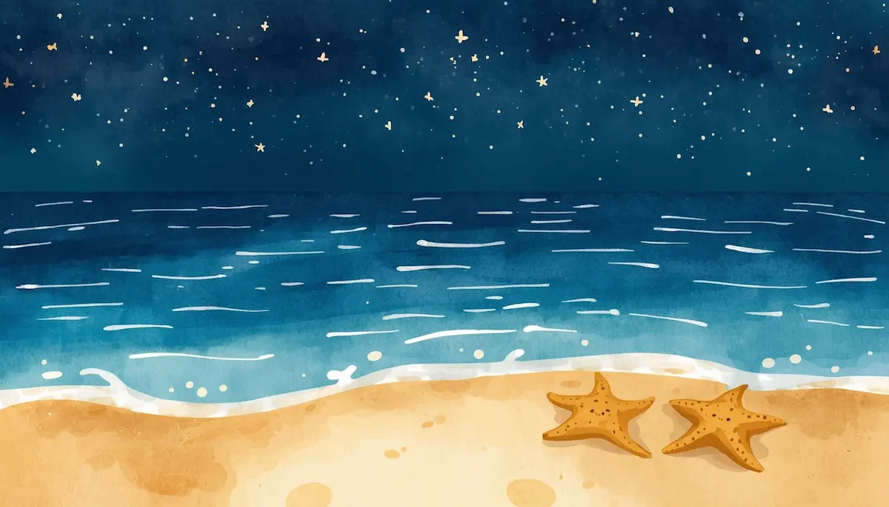
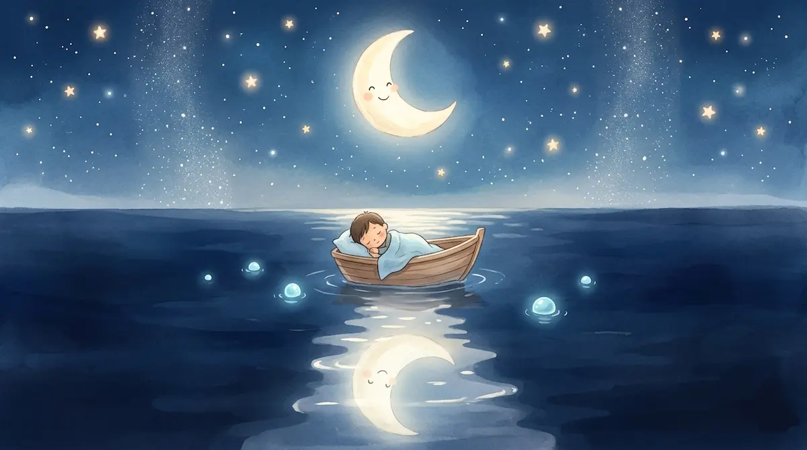
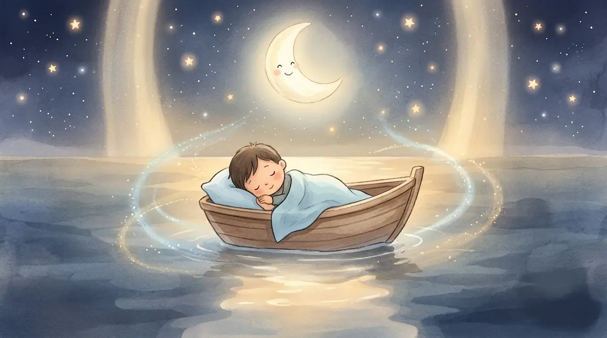

6. La canción de las olas dormilonas

Introducción: El Mar en Calma
Hola, pequeño explorador de los mares. Qué bueno que estés aquí, en tu nido de mantas. A veces, cuando llega la noche, nuestra mente se siente como un mar con muchas olas, moviéndose de aquí para allá. Tal vez sientas algo de inquietud o pensamientos que no te dejan descansar. Quiero que sepas que es normal sentirse así; hoy vamos a invitar a esas olas a que se vuelvan suaves y pequeñitas.

Dormir no es solo cerrar los ojos, es entrar en el taller donde se fabrica tu mañana. Imagina que tu cama es una barquita de madera suave, flotando en un mar de leche tibia, bajo una luna grande que te cuida desde arriba.
La Técnica del Vaivén (Respiración Sincronizada)
Ahora, vamos a convertir tu respiración en la canción de este mar. Pon tus manitas sobre tu barriga, justo encima del ombligo. Tus manos son como dos estrellas de mar descansando en la arena.

Imagina que tu barriguita es el océano. Cuando el aire entra por tu nariz, la marea sube. Siente cómo tus manos se elevan despacio, como una ola suave que llega a la orilla cargada de luz blanca.

Mantén ese aire un segundito... disfruta de esa frescura.
Ahora, suelta el aire muy despacio por la boca, siseando como el sonido del mar: ssssssss. Siente cómo la marea baja, tus manos se hunden y la ola regresa al mar llevándose cualquier preocupación o nerviosismo.
Vamos a hacerlo juntos, siguiendo el ritmo de las olas que escuchas. Inspira... la ola sube... 1, 2, 3. Expira... la ola se aleja... 1, 2, 3.
Visualización: El Descanso del Océano
Con cada respiración, tu cuerpo se vuelve más pesado, como si te fundieras con la arena tibia y suave de la playa. Siente cómo se relajan tus pies... tus piernas... tus brazos. Si aparece algún pensamiento inquieto, míralo como una burbuja en el agua. Mírala flotar y, simplemente, deja que el vaivén del mar se la lleve lejos, hacia el horizonte.

El mar es inmenso y tiene fuerza, pero ahora ha decidido dormir. Todo está en silencio. Solo queda el brillo de la luna reflejado en el agua, como un camino de plata hecho solo para ti. Estás a salvo en tu barquita. Nada puede molestarte aquí.

Cierre: Seguridad y Paz Profunda
Tu cuerpo ahora es como la gelatina, blandito y en paz. El ritmo de las olas se queda guardado en tu corazón. Ya no tienes que hacer nada más, solo dejarte acunar por este movimiento invisible.
Recuerda: eres valiente como un capitán y estás protegido por el abrazo del mar. Mañana despertarás con la energía de un sol nuevo, pero ahora, entrega todo tu peso a la almohada. Confía en la noche. Confía en tu respiración. Buenas noches, pequeño capitán. El mar ya canta para ti.